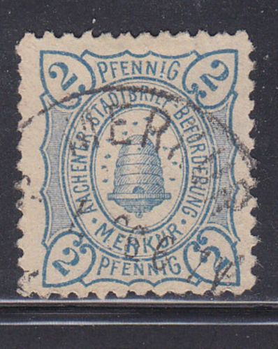
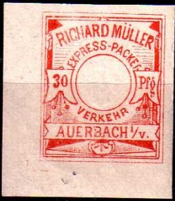
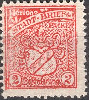
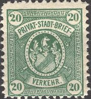

{kind=link}


Return To Catalogue - Germany - Other local issues
Note: on my website many of the
pictures can not be seen! They are of course present in the
catalogue;
contact me if you want to purchase it.
Image obtained from www.privatpost-merkur.de (Reduced size)
(Reduced sized images)
2 p blue 3 p orange 3 p black 5 p red 10 p green Surcharged
(Reduced sized images)
'3 Pfg' (violet) on 5 p red '3 Pfg' (violet) on 10 p green '*3*' (violet) on 5 p red '*3*' (violet) on 10 p green Surcharged and overprinted with 'H' (violet) '3 Pfg' on 5 p red (very rare) Surcharged and overprinted with 'D' (violet) '3 Pfg' on 5 p red (very rare)
The stamps 2 p blue and 3 p orange were also used in Duren.
(Various cancels, among them three with 'Prosit Neujahr': 'Happy
newyear')
Postcard from Aachen.
2 p brown 2 p grey on yellow 2 1/2 p lilac 3 p blue 3 p blue on yellow 5 p red on yellow
(Reduced size)
2 p red 3 p grey blue
2 p brown 3 p blue 5 p red
More heavily printed specimens exist (1897). Imperforate stamps also exist.
2 p blue 3 p blue 5 p blue 10 p blue 13 p blue 20 p blue 50 p blue 100 p blue
(reduced sizes)
2 p blue 3 p red 5 p orange 10 p green 100 p brown
2 p orange (Goethe) 3 p blue (Schiller) 10 p red (Mozart) 20 p green (Beethoven) 1 M green (Wagner)
2 p green 3 p blue 5 p red 10 p violet 15 p brown 20 p orange
Other stamps with a curved overprint exist on stamps of Hamburg, but are probably bogus issues.
(Reduced sizes)
There exist a 1 Sh red and a 2 Sh blue, the adress "Steintwiete 25" has mostly a penstroke on it (because the adress of the company had changed).
This stamp with inscription "Polizei-Amt Altona Quittung
uber Auskunftsgebuhr"; this stamp was issued in 1906 and is
a fiscal stamp.
2 p brown 2 p grey on yellow 3 p blue 3 p blue on yellow 5 p red on yellow
3 p blue Overprinted 'OTTO COLLER APOLDA 3 p blue
(Reduced sizes, note the cancel)
3 p red Overprinted "OTTO COLLER APOLDA" 3 p red
(Parcel stamps)
Parcel stamps with inscription "Expressverkehr J.W. Harris Apolda" exist with a number in the design in the values 5 p green, 10 p blue, 20 p brown, 30 p red and 50 p yellow. I have seen two types of all values, type I with the two small circles at both side of the value at the same level and type II with the right hand circle placed lower:
(Two types, reduced sizes)
Other values with the arms of Apolda and the inscription "EXPRESS - PACKET - VERKEHR APOLDA J.W. HARRIS" have been issued in the following values: 5 p green, 5 p blue, 10 p lilac, 20 p brown (shades), 30 p orange, 40 p yellow, 50 p blue, 50 p green and 1 M red.
Just after world war II, more local stamps were issued for Apolda.
Click here for more information.
(Reduced size, rotated 90 degrees)
1 p orange (yellow) 1 p grey 2 p blue 2 p violet 3 p brown 3 p red 5 p brown 5 p green 10 p red 10 p yellow These stamps exist overprinted "Brand 1888" (fire)
(Reduced sizes)
1 p brown 1 p green 1 1/2 p red 1 1/2 p yellow 2 p violet 2 p blue 2 p brown 3 p brown 3 p red 5 p grey 5 p yellow These stamps exists overprinted "Brand. 1888" (=fire)
(With overprint "Brand. 1888", reduced size)
100 p brown 100 p red 150 p orange 150 p green 200 p violet 200 p blue 200 p brown 500 p yellow 500 p grey 1000 p red 1000 p yellow These stamps were also used in Falkenstein.
Postcard in the same design as postage stamps:
(Reduced size)
Other issues from R.Muller with inscriptions "EXPRESS PACKET VERKEHR" (with and without embossed center, for parcels), "PACKET NACHPORTO" (parcel due stamps), "AUSGLEICHS MARKE", "WAAREN PROBEN", "EILBOTE" (express), "ANWEISUNG", "Auftrag" and "Eingeschrieben" (registered) exist, also some of them with overprint "Brand 1888":
"Auftrag" and "ANWEISUNG"
("AUSGLEICHS MARKE", reduced sizes)
("EILBOTE", reduced size)
"WAAREN-PROBEN"; very similar stamps were issued for
Falkenstein.
("WAAREN-PROBEN", reduced size)
Some other parcel stamps:

"ABFERTIGUNG PACKET BESTELLUNG"; very similar stamps
were issued for Falkenstein.
(Express-Packet Verkehr, reduced sizes)
2 p red 3 p blue Surcharged in red or blue (old values removed)
(Reduced size)
'15' on black '20' on blue '25' on red
These stamps were also used in Muhlhausen.

(Reduced size)
2 p red 3 p blue
These stamps were also used in Muhlhausen.

(Reduced size)
2 p blue 2 p orange 15 p red 20 p green 25 p brown
A 2 p yellow was issued for Bamberg in the same design, more values were issued in Furth. The 25 p brown was also used in Furth.
2 p blue
(Reduced size)
2 p yellow
Other values exist in Augsburg and Furth, the 15 p green, 20 p black and 25 p brown of Furth were also used in Bamberg.
2 p blue
2 p blue
2 p red (2 types) 3 p orange 5 p green 5 p blue
3 p brown
2 p brown 3 p green
Postcards, example:
(What is this? Postcard overprinted 'Berlin Wilmersdorf')
I've seen (modern) reprints made with the
original dies in minisheets (50 sets were printed of each)
6 stamps of 3 pf blue
6 stamps of 3 pf red
4 stamps, 3 pf (2 times), 4 pf and 10 pf all in green
4 stamps, 3 pf (2 times), 4 pf and 10 pf all in blue; the four
stamps printed in a lozenge shape
{kind=link}
{kind=link}
{kind=link}
{kind=link}
{kind=link}
{kind=link}